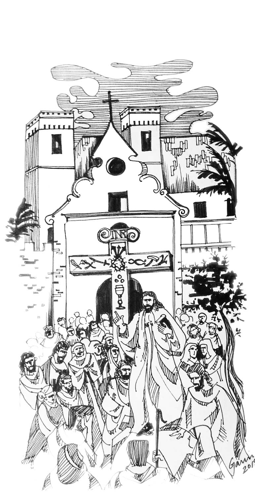

The Cross of Santa Anna
A Bible Carved in Stone
The stone cross in St Andrew’s is as much a religious symbol as a historical relic connecting St Andrew’s with its older sister church, destroyed in 1739. Originally located in the compound of St Anne’s, near where the present Bandra Suburban Railway Station is, this cross was set up in the south section of our church compound in 1871. The date on the base of its east face bears witness to the year of its sculpting, 1678. In 1917-19 the old pedestal was removed and the present dome-shaped pedestal was built.
The cross bears forty-five carvings on its faces. Of these twenty symbols on the east face pertain to Christ’s passion, the Arma Christi or Instruments of the Passion, while the twenty symbols on the west face are symbols hinting at qualities and virtues of Our Lady.
There are three other sculptings on the cross. The Titulus Crucis, attached to the top of the cross on both faces, INRI, Iesus Nazarenus Rex Iudaeorum, inscribed in Latin, Greek, Hebrew, or Aramaic. The cross sculpted at the end of each arm is the Cross of the Order of Christ, or the Cross of Portugal. This cross was also displayed on the sails of the Portuguese caravels, carracks and other ships involved in the exploration of the seas. And finally, at the base of the east face, is carved the date 1678.
The cross was carved, very likely using local stone from a quarry in Vile Parle, Dongri or Bassein, probably by local artisans, already expert in carving temple stone. Often stated to be carved from a single stone, a monolith, we now know it was constructed in two parts. There appears a clear joint in the cross just below the two arms on the main upright.

The cross was used for catechetical purposes as a means of religious instruction in the days when books were scarce. One can easily picture the scene almost 250 years ago. At sundown perhaps, a Jesuit padre gathered at the base of the cross with a crowd of the faithful. He uses the detailed sculpted symbols, one after another to lead his rapt congregation through the passion and death of our savior, and the many virtues of Mary His mother.
We are indeed fortunate that, after the destruction of St Anne’s in 1739, the estate was bought, around 1800, by Fr Francisco de Mello, a vicar of St Andrew’s. This ensured the preservation of the cross we see today at St Andrew’s.
In the words of Dr Paolo Aranha a historian, “your cross is a truly remarkable monument in terms of symbolism and iconography … in my own personal experience I have never come across such a cross … It is indeed a great merit of your community and its pastors to have conserved so carefully such a precious witness of your Christians origins.”
An interesting local tradition among the parishioners is that when some disaster was about to occur a pink glow would be visible around this cross.
In recognition of its unique historical significance, the Mumbai Heritage Commission has designated it a Grade I heritage structure, the highest classification, and the Church as grade IIA, the next highest classification.
